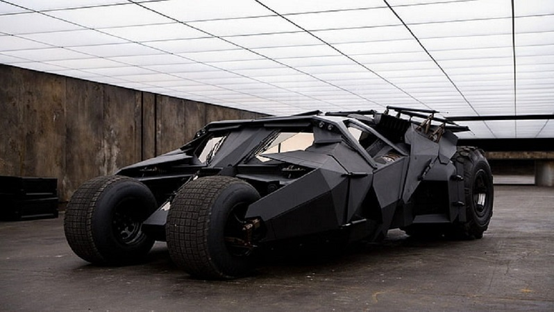
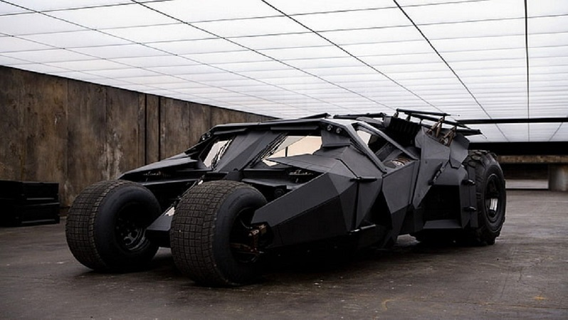
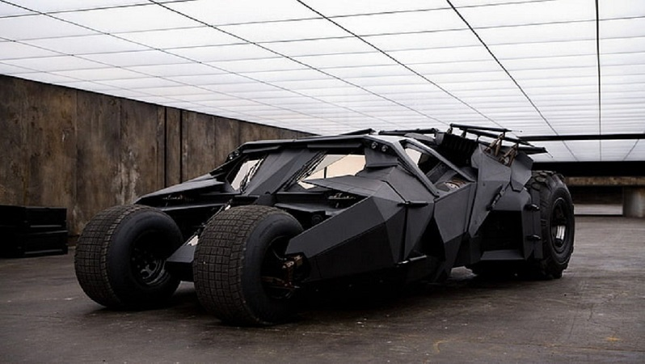

I'm Batman.
a superhero.
 

a superhero.

I am Batman protector of Gotham City, a person who fights against evil and strikes terror into the hearts of criminals everywhere. I have a secret identity of Bruce Wayne, billionaire industrialist and a notorious playboy.
Genius Intelllect, Master Detective, Master Combatant, Master Weapons Specialist, Master of Stealth (more...)
Gadgets, Superhuman Level Strength, Superhuman Level Agility, Superhuman Level Intellect(more....)
I have saved Gotham City at least once a week since his creation. I saved the world and the universe a hundred times over alongside the Justice League. I have taken down Superman and Darkseid one on one. But my greatest achievement is surviving the most twisted, depraved adversary I have ever faced. A villain crazier than the Joker, more manipulative than the Scarecrow, more diabolically Machiavellian than Ra's Al Ghul, and more capable of permanently crippling me than Bane….Joel Shumacher!(more...)
Love batman as much as I do ? Let's talk about the greatness of batman.
CONTACT ME